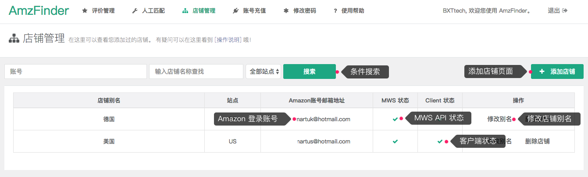
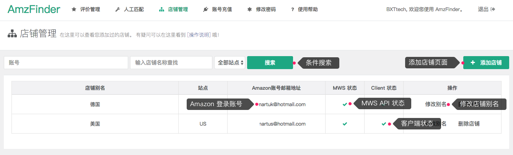

店铺管理

店铺的 Amazon 登录账号邮箱地址和客户端添加的账号需要保持一致。
当 MWS 状态 和 Client 状态都 为时，系统正常。如果 MWS 状态是 请检查你输入的 Merchant ID，AWS Access Key ID 和 Secret Key 是否正确。如果 Client 状态是 请检查客户端是否已启动或者网络是否连通。如果还是不行，可以欢迎您联系微信客服。

店铺的 Amazon 登录账号邮箱地址和客户端添加的账号需要保持一致。
当 MWS 状态 和 Client 状态都 为时，系统正常。如果 MWS 状态是 请检查你输入的 Merchant ID，AWS Access Key ID 和 Secret Key 是否正确。如果 Client 状态是 请检查客户端是否已启动或者网络是否连通。如果还是不行，可以欢迎您联系微信客服。